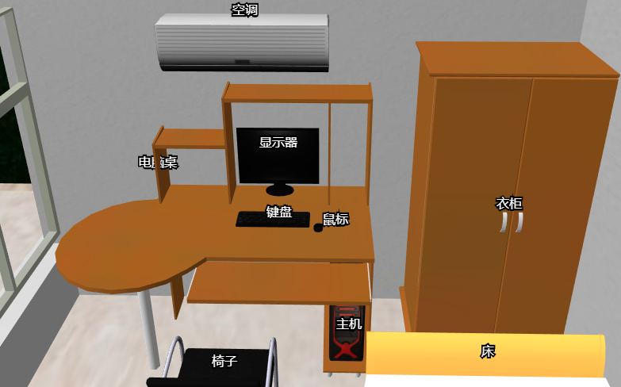

使用three.js创建大小不随着场景变化的文字，需要以下两步：
1、将文字绘制到画布上。
2、创建着色器材质，把文字放到三维场景中。
优点：
1、跟用html实现文字相比，这些文字可以被模型遮挡，更具有三维效果。
2、不会随着场景旋转缩放改变尺寸，不存在远处看不清的情况，适用于三维标注。
效果图：

示例代码1：https://github.com/tengge1/ShadowEditor/blob/master/ShadowEditor.Web/src/object/text/UnscaledText.js
示例代码2：https://gitee.com/tengge1/ShadowEditor/blob/master/ShadowEditor.Web/src/object/text/UnscaledText.js
1、使用canvas绘制文字，先用黑色绘制描边，然后用白色绘制文字。黑色描边主要为了让文字在白色背景处能看清。
let context = canvas.getContext('2d');
context.imageSmoothingQuality = 'high';
context.textBaseline = 'middle';
context.textAlign = 'center';
context.lineWidth = 4;
let halfWidth = canvas.width / 2;
let halfHeight = canvas.height / 2;
// 画描边
context.font = `16px "Microsoft YaHei"`;
context.strokeStyle = '#000';
context.strokeText(text, halfWidth, halfHeight);
// 画文字
context.fillStyle = '#fff';
context.fillText(text, halfWidth, halfHeight);
2、 创建着色器材质，将文字正对屏幕，渲染到三维场景中。
let geometry = new THREE.PlaneBufferGeometry();
let material = new THREE.ShaderMaterial({
vertexShader: UnscaledTextVertexShader,
fragmentShader: UnscaledTextFragmentShader,
uniforms: {
tDiffuse: {
value: new THREE.CanvasTexture(canvas)
},
width: {
value: canvas.width
},
height: {
value: canvas.height
},
domWidth: {
value: renderer.domElement.width
},
domHeight: {
value: renderer.domElement.height
}
},
transparent: true
});
let mesh = new THREE.Mesh(geometry, material);
说明：由于canvas上绘制的文字边缘是半透明的，材质要设置成半透明才能实现文字边缘平滑效果。
precision highp float;
uniform float width;
uniform float height;
uniform float domWidth;
uniform float domHeight;
varying vec2 vUv;
void main() {
vUv = uv;
vec4 proj = projectionMatrix * modelViewMatrix * vec4(0.0, 0.0, 0.0, 1.0);
gl_Position = vec4(
proj.x / proj.w + position.x * width / domWidth * 2.0,
proj.y / proj.w + position.y * height / domHeight * 2.0,
proj.z / proj.w,
1.0
);
}
说明：
a、(0.0, 0.0, 0.0)是平面中心世界坐标，左乘modelViewMatrix和projectionMatrix后，得到屏幕坐标系中的坐标。
b、proj.x / proj.w + position.x * width / domWidth * 2.0的意思是把平板中心放到世界坐标系正确位置，让平板显示的宽度恰好等于屏幕上的像素数，避免文字缩放。
c、乘以2.0是因为three.js默认生成的平板宽度和高度是1，屏幕坐标系宽度和高度都是从-1到1，是2。
d、gl_Position.w为1.0时，是正投影，模型大小不随着屏幕深度变化而改变。
precision highp float;
uniform sampler2D tDiffuse;
uniform float width;
uniform float height;
varying vec2 vUv;
void main() {
// 注意vUv一定要从画布整数坐标取颜色，否则会导致文字模糊问题。
vec2 _uv = vec2(
(floor(vUv.s * width) + 0.5) / width,
(floor(vUv.t * height) + 0.5) / height
);
gl_FragColor = texture2D( tDiffuse, _uv );
}
说明：
1、uv坐标一定要恰好对应画布上的像素点，否则会导致文字模糊问题。
vec2 _uv = vec2(
(floor(vUv.s * width) + 0.5) / width,
(floor(vUv.t * height) + 0.5) / height
);